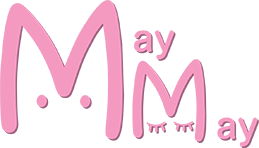
「ちゃいるどりいむ」は、Child's Dream の造語です。
全ての子どもと家族が夢を抱き、夢を叶え、笑顔で過ごせるような未来を創ることをミッションに活動しています。
MayMay について
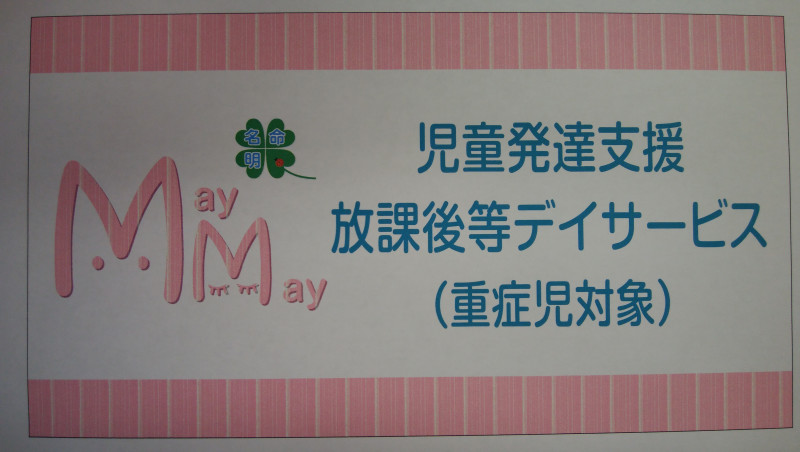
May「～かもしれない」可能性を示します。
どんな障害があっても、子どもたちの可能性、家族の可能性、そして社会の可能性を引き出し、
子どもと家族の夢を未来につなぎます。
1人1人に名前があるように、子どもの個別性に合わせた遊びや教育を提供します。
小児看護専門看護師を中心に、経験豊富なスタッフが医療的ケアの必要なお子様の大切な命をお預かりします。
お子さまも、スタッフも、明るく笑顔いっぱいで過ごせる場を創ります。
お子様・ご家族・地域へ、3つの支え
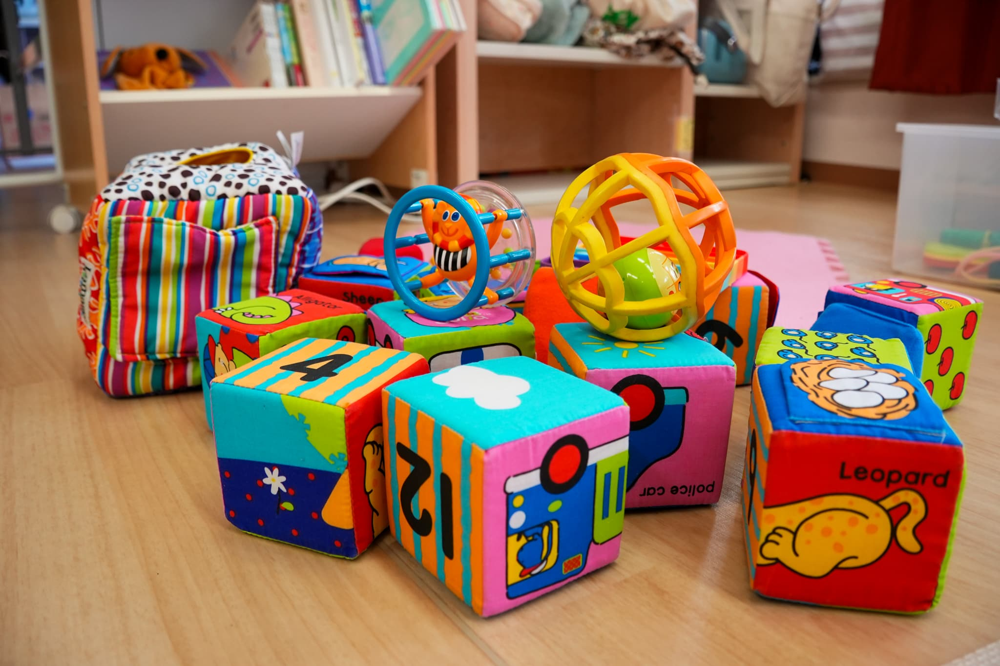
お子様の個別性に合わせたケアで、お子様の可能性を伸ばします。
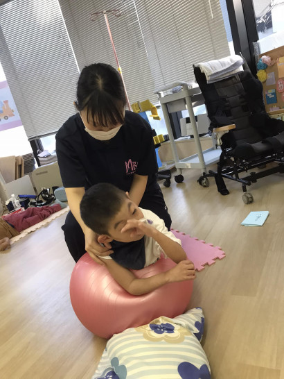
安心して預けることができ、ご家族同士で交流して情報交換をする場を創ります。
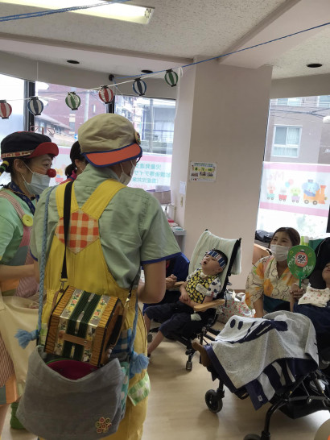
様々な機関とつながり、お子様とご家族が地域とつながれるようサポートします。
＜送迎地域＞淀川区、東淀川区全域。その他、近隣区域は応相談。
放課後等デイサービスの児童指導員 × アルバイト・パート × 大阪市淀川区
| 職種 | 放課後等デイサービスの児童指導員 |
|---|---|
| 雇用形態 | アルバイト・パート |
| 求める資格等 |
基本：ブランクOK！扶養内勤務OK！ 必須：児童指導員任用資格 優遇：児童指導員としての実務経験、普通自動車運転免許（AT限定可） |
| 勤務時間 |
《平日》①09:30～18:30（休憩60分） ②12:30～18:30（4時間程度OK） ③14:30～18:30 《土曜・祝日》08:45～16:30（休憩45分） 《長期休暇期間》08:45～17:30（休憩60分） ※勤務時間帯応相談！ |
| 勤務地 | 大阪府大阪市淀川区十三東1-11-28 光第8ビル1階 |
| 事業所 | 特定非営利活動法人ちゃいるどりいむ『児童発達支援・放課後等デイサービスMayMay』 |
| 交通アクセス | 阪急電車（神戸線・千里線・京都線・宝塚線）十三駅 徒歩6分／自転車通勤OK（無料駐輪場完備） |
| 雇用期間 | 長期（3ヵ月以上） |
| 契約期間 | 12ヵ月（1年毎に更新） |
| 試用期間 | 3ヵ月（試用期間中の待遇：本採用時と変動なし） |
| 休日・休暇 | シフト制・週1日から勤務OK／有給休暇（法定通り付与） |
| 給与 | 時給 1,150円～1,300円 ※年齢、経験、能力等により応相談 |
| 賞与・昇給 | 賞与：年2回（業績・評価に応じて）／昇給：年1回 |
| その他手当 | 通勤手当（勤務日数により変動）／運転手当 50円／時／土曜・祝日手当 100円／時／ 特定処遇改善加算 10円／時／処遇改善加算 40円～／時 |
| 保険 | 就業時間に応じて法定通り保険加入 |
| 採用フロー | 応募 → 面接1回（履歴書持参） → 合否連絡（面接から約1週間） |
| 施設見学 | 採用前の研修見学を実施。入職前に現場の様子を感じていただけます。 |
シフトもスタッフさんの希望にできるだけ合わせて組むのでご安心ください。
もっと療育について知りたい！という意欲的な方には正社員登用の道もご用意しています。
入職後はOJT研修を実施。現場で業務に携わりながらスムーズに業務を覚えられます。
近くの畑で栽培しているお野菜を、利用者さんと一緒に収穫。スタッフにも配ることがあります♩
重症心身障害児を対象とした児童発達支援・放課後等デイサービス
現在は、2歳～14歳までの主に医療的ケアを受ける子どもが利用しています。障がいのある子どものサポートを行っていただきます。
《具体的には》
・遊びと学びのサポート（プログラム・イベント・体操など）
・身の回りのお世話の補助（おむつ交換、食事介助）
・送迎補助（自宅や学校への送迎）
☆プログラム例☆
おでん屋さん遊び／発泡スチロールで雪遊び／河川敷でわらび採り など
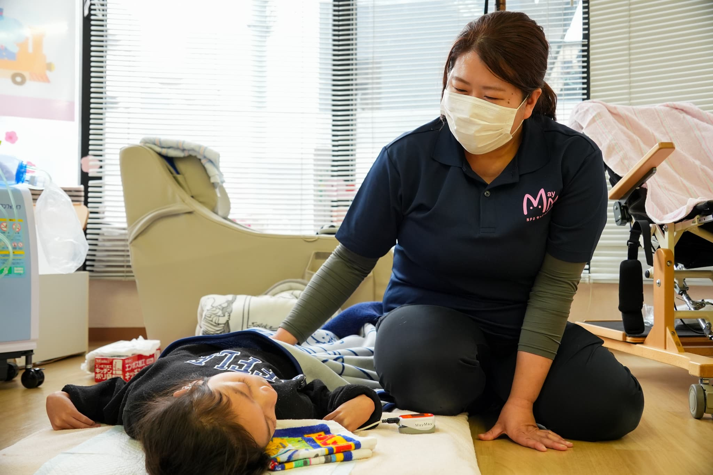
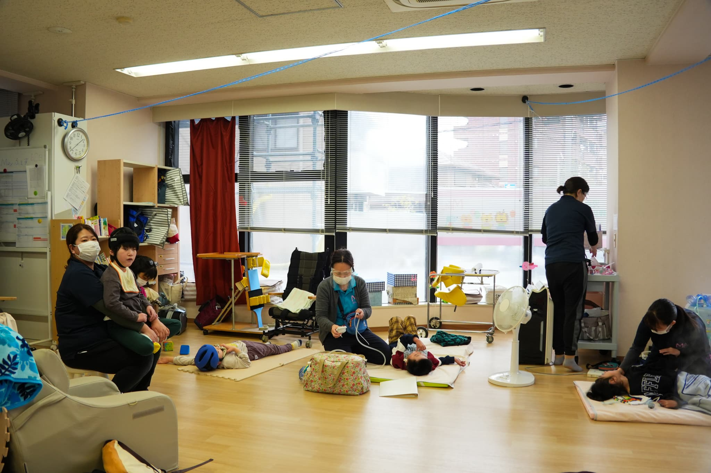
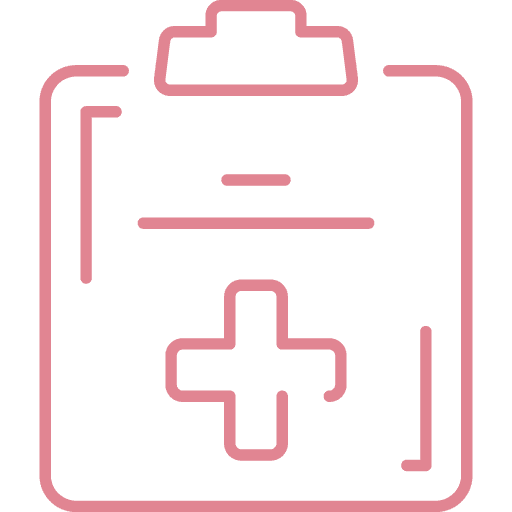
結婚・出産お祝い金／慶弔見舞金
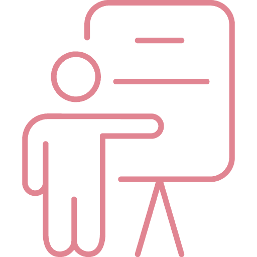
年1回実施
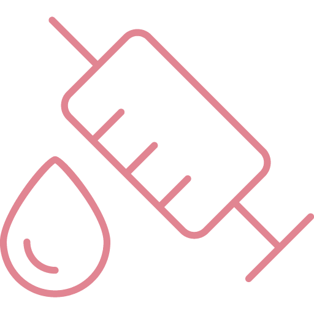
補助あり
新年会・イベント打ち上げ
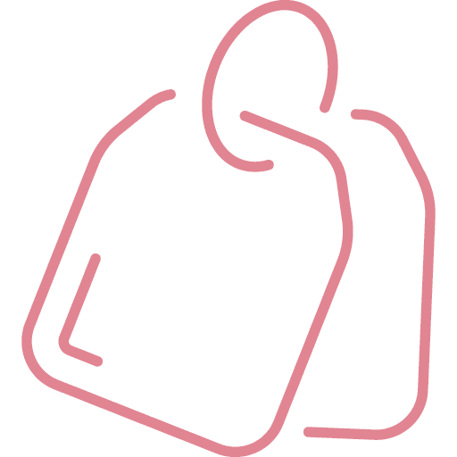
喀痰吸引等研修など、取得費用を全額会社負担
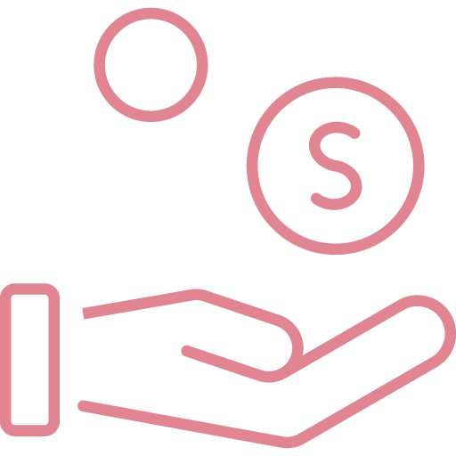
Webセミナーや社内外研修を積極的に実施
Tシャツ・ズボン・エプロン
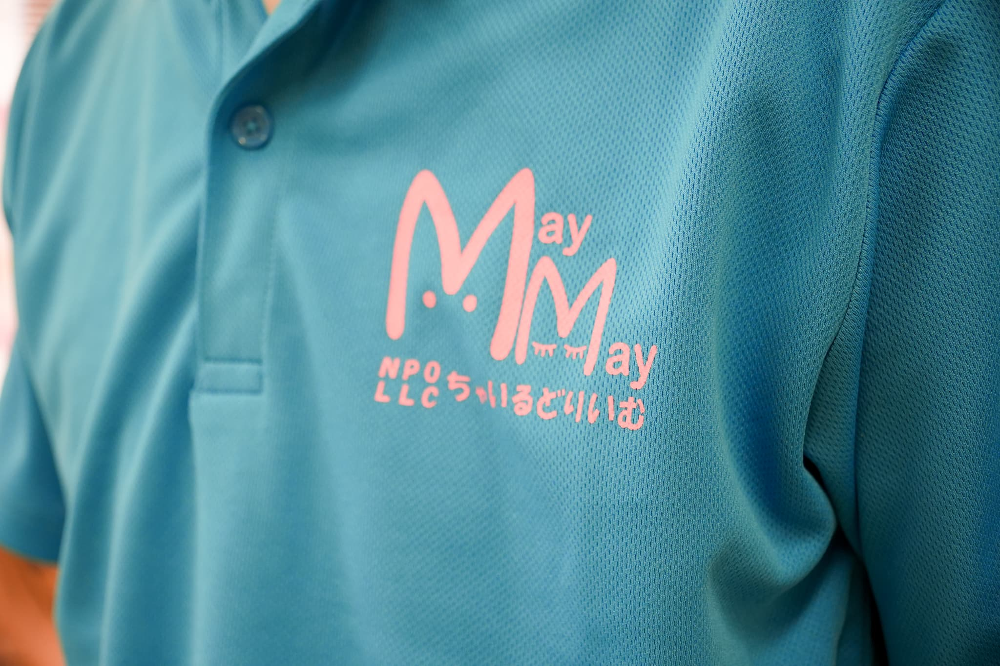
グループ会社の訪問看護での副業OK／正社員登用あり
現場で働くスタッフの声をご紹介します
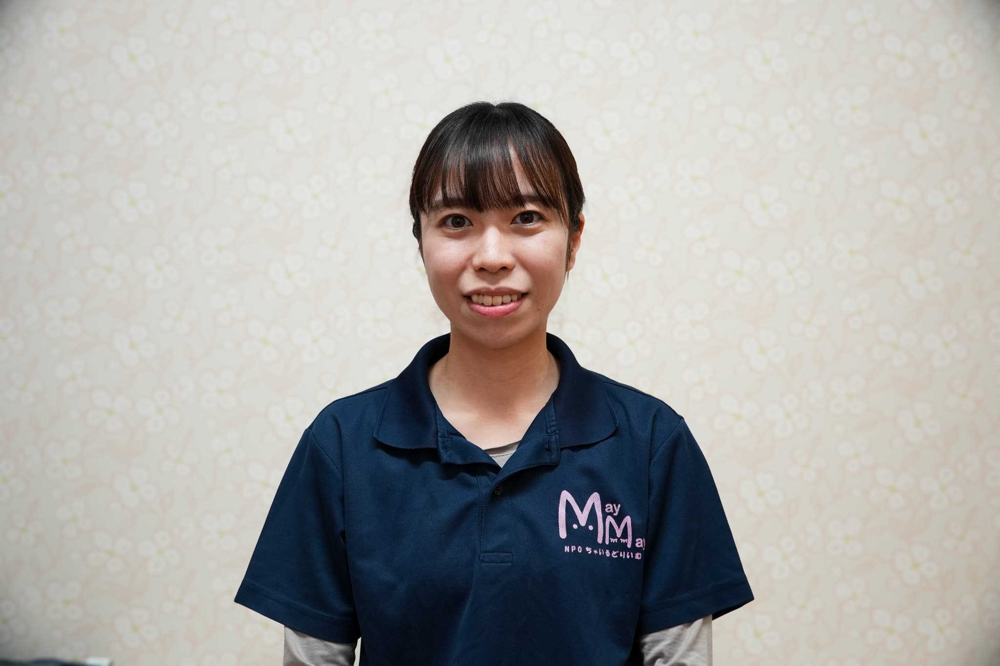
Q. 職場の雰囲気は？
スタッフの仲が良く、働きやすい職場です。困った事があっても先輩方が親切に教えて下さいます。
Q. やっててよかったことは？
利用者様の成長・発達の過程を身近で感じられ、笑顔が見られた時は何よりの励みになっています。
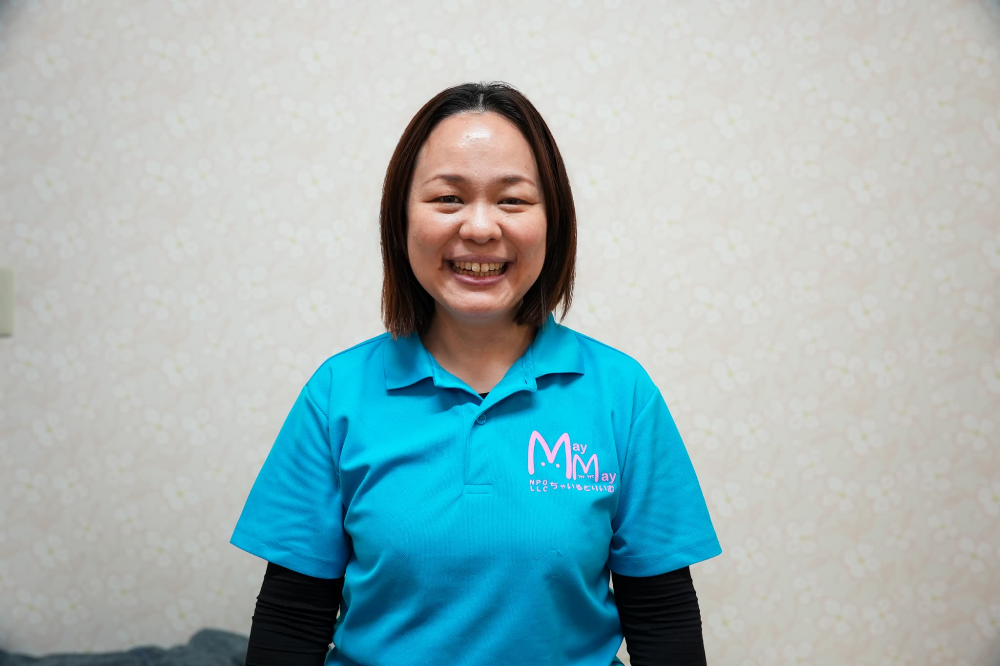
Q. 職場の雰囲気は？
20〜50代まで幅広い年齢層が活躍。毎日のミーティングで情報共有し、上司にも意見を言いやすい環境です。定員5名でマンツーマン対応のため安心できます。
Q. やっててよかったことは？
ご家族から「帰宅後いつもニコニコしている」等の声を聞くと、発達支援に関われていることを嬉しく感じます。
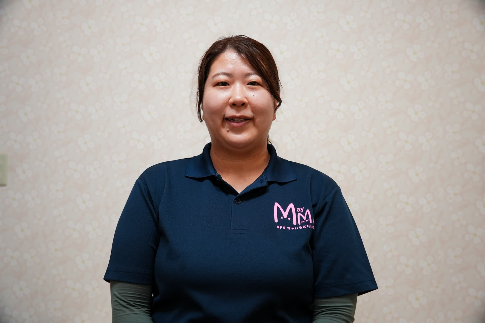
Q. 職場の雰囲気は？
看護師が複数在籍し、わからないこともすぐに教えてもらえて安心。子どもが笑うとスタッフも笑う、明るく和やかな職場です。
Q. やっててよかったことは？
個別活動の中で子どもたちの笑顔や成長を感じられることが嬉しいです。
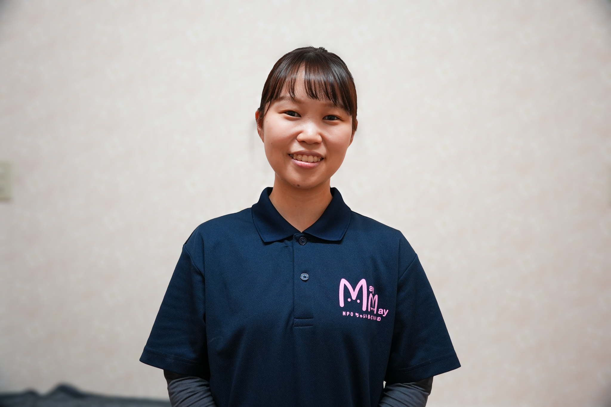
Q. 職場の雰囲気は？
明るく優しいスタッフが多く、困ったことがあっても声をかけやすい雰囲気。多職種が連携して業務を行っています。
Q. やっててよかったことは？
日常生活動作をお子様の側で支援できることは学びが多く、成長を感じる度にやりがいを感じます。
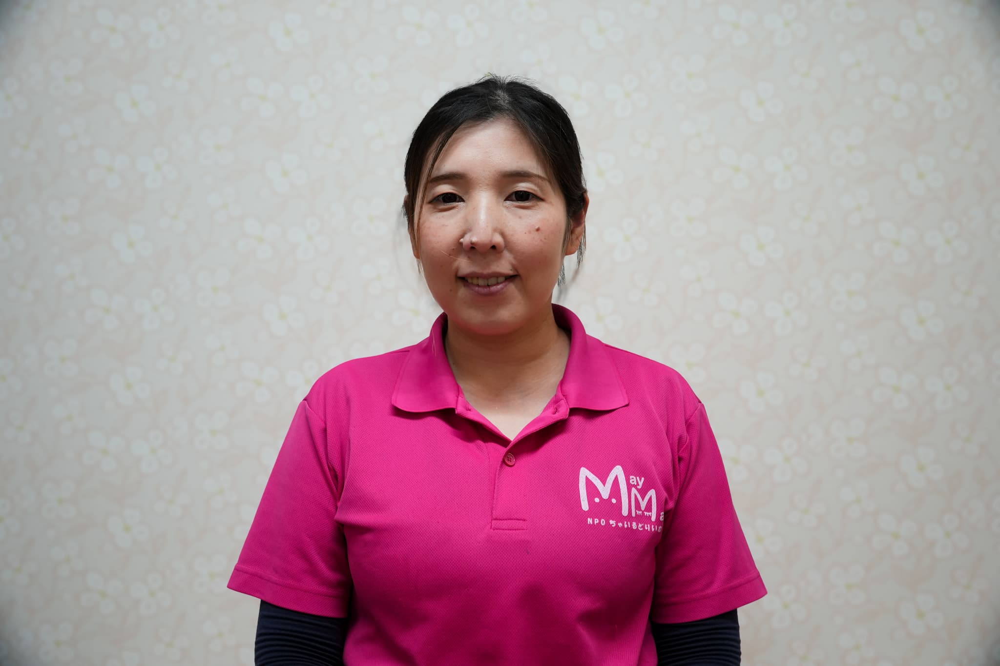
Q. 職場の雰囲気は？
こどもが大好きな人達が集まっています。2人ペアで利用者さんを受け持つため、密に関わることができます。
Q. やっててよかったことは？
こどもたちの成長を近くで見られ、ご家族と喜びを共有できるところです。
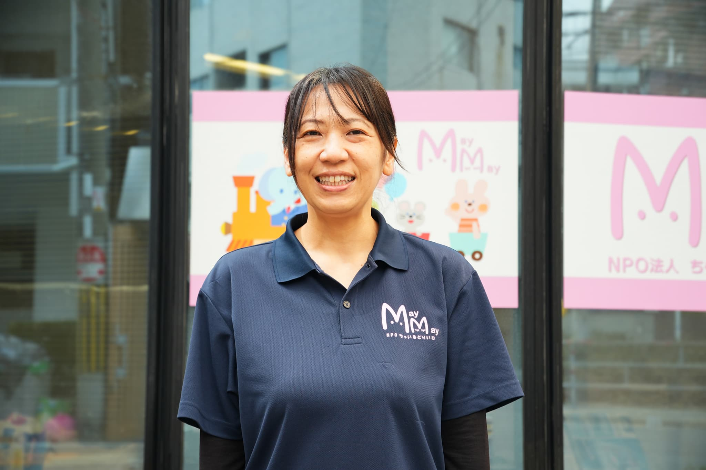
Q. 職場の雰囲気は？
週1回、利用者様の情報共有の時間を持ち、スタッフで意見を出し合っています。不安なことはすぐに聴ける雰囲気です。
Q. やっててよかったことは？
子どもたちの笑顔や頑張っている姿から、日々元気をもらっています。
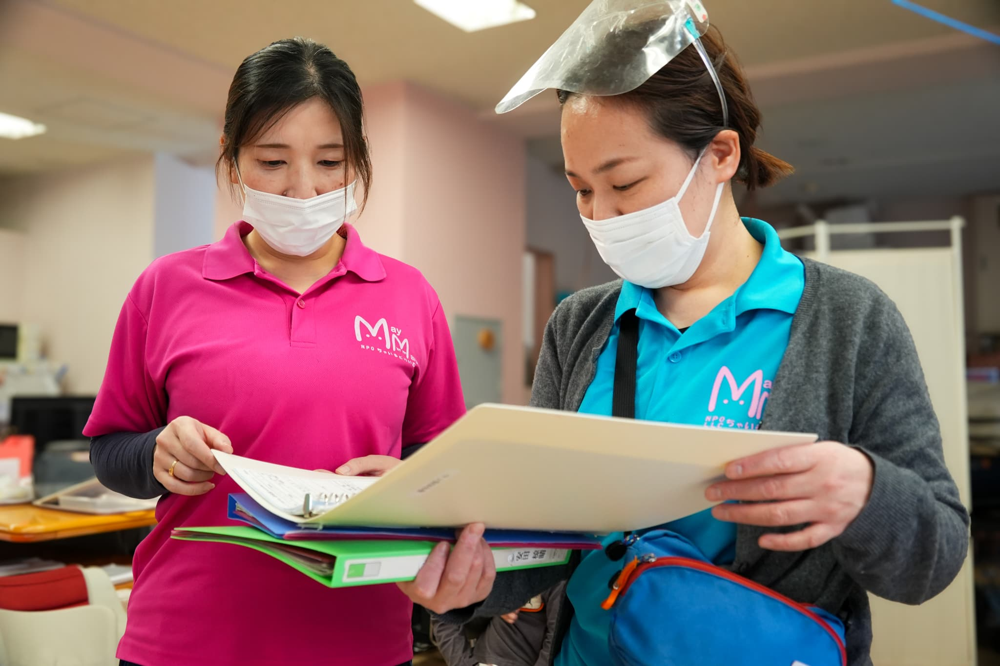
特定非営利活動法人「ちゃいるどりいむ」は、Child's Dream（子どもの夢）の造語であり、児童発達支援・放課後等デイサービスMayMayを通じて、子どもたちの可能性、家族の可能性、そして社会の可能性を引き出し、子どもと家族の夢を未来につなげることを使命としています。
従業員の成長も重視し、資格支援制度を導入。専門知識やスキルの向上を目指せる環境を整えています。
| 法人名 | 特定非営利活動法人ちゃいるどりいむ |
|---|---|
| 代表理事 | 平山 五月 |
| 設立年月日 | 2018年12月 |
| 従業員数 | 20名 |
| 事業内容 | 障害児通所施設（児童発達支援・放課後等デイサービス・保育所等訪問支援） |
| 郵便番号 | 532-0004 |
| 所在地 | 大阪府大阪市淀川区西宮原2丁目6番41-1005号 |
当法人では、福祉・介護職員処遇改善加算Ⅲ／福祉・介護職員等特定処遇改善加算Ⅱを算定しています。 「資質の向上やキャリアアップに向けた支援」「両立支援・多様な働き方の推進」「やりがい・働きがいの構成」に積極的に取り組んでいます。
MayMayの日常から
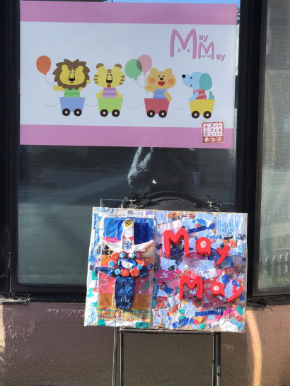
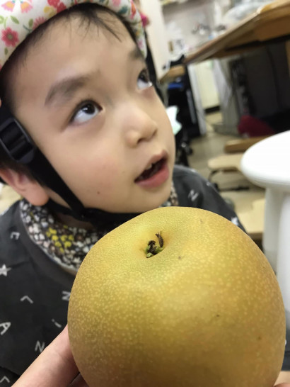
下記項目にご入力の上、ご応募ください